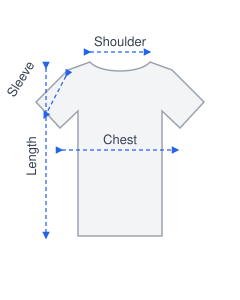

Product page · Live demo
Everyday Tee
$29
Fit: Regular
Slim
Buckeye / M
Add to cart
Shopify app · runs on Cloudflare Workers
Publish a size chart in minutes, then let shoppers switch units, find their size by measurements, height or weight, and tell you how the fit really feels — in their own language. Everything below is the real widget, running on this page.
Live demo
The same chart data renders inline, as an accordion, a side drawer or a modal. Pick a mode per block in the theme editor. Each panel below is interactive: open a mode, switch to inches, try “Find my size”, or type a height and weight.
Expands in the page flow instead of an overlay. This product’s fit is Slim, so the Slim table opens first.
Keeps the product page tidy — one tap reveals the table, calculator and feedback.
Slides in from the edge, so shoppers keep the product context while they check sizes.
For shoppers
The widget ships with the app — no code, no theme edits beyond adding the block or embed. It reads the assigned chart, resolves the active locale and market, and renders instantly.
Inline, accordion, drawer or modal — selected per theme block. A floating button can show the guide on every product page.
Theme editor → App blocks → Size chart
Attach a table to a variant option such as Fit = Slim. The matching table opens first and its size row is highlighted.
See it in the inline demo above
Shoppers enter chest, waist or hips and get the closest size with the shop’s own size-system label, not a guess.
Powered by the chart’s measured columns
Optional per-table ranges in cm/in and kg/lb. Enter one or both values and the closest size row lights up.
Editor → table → Height & weight
A cm/in toggle is remembered between visits. US visitors start in inches, most of Europe in centimetres, using each market’s defaults.
Unit labels update across the whole table
Button, headings, calculator, height/weight and feedback labels follow the storefront language: EN, FR, DE, ES, IT, JA, ZH-CN, PT-BR.
Try the language pills above
An embed adds “Size guide” links under titles on collection cards and beside cart line items, limited to 20 per page for speed.
App embed → Size Chart Links
Shoppers vote runs small / true to size / runs large. Votes go through the app proxy and appear as totals on the dashboard — one vote per chart per browser.
Toggle it in Settings → Chart window
Every chart can carry a fit note and step-by-step measuring instructions with an illustration: tops, bottoms, dresses, bras, footwear, belts, gloves, headwear, eyewear and more.
Shown inside the guide, under the table
For merchants
No separate dashboard to learn. The app is embedded in the admin and built with App Bridge, so charts, rules, settings and the plan all live where merchants already work.

Everything else
Tops, bottoms, dresses, outerwear, underwear & swimwear, kids & baby, shoes & socks, accessories, and glasses. Search by keyword, load, edit, save.
29 charts · 168 rows · 99 columns, all editable
Give each chart a translated name, table labels, fit notes and instructions. The snippet resolves the shopper’s locale with a language fallback; numbers stay shared.
Editor → Translations
Export every chart, rule, override and setting into one JSON file. Import updates charts by ID, creates missing ones, remaps references and republishes the index.
Settings → Export / Import backup
Move a size table between shops or spreadsheets. Export a chart as CSV and import one back into the editor.
Editor toolbar
A small admin block on the product page pins a chart to that product or clears the override, without leaving the product admin.
Product page → Apps → Size chart
Every setting is documented inside the app, and an App info page lists what is stored, where, and what is removed on uninstall.
Help · App info
Under the hood
The backend is a single Cloudflare Worker with a KV store. No servers to patch, nothing that spins down, and the storefront widget is a small script loaded once per page.
The Worker handles OAuth, session-token exchange, the app proxy, webhooks and the storefront index. Charts live in Shopify metaobjects.
App Bridge session tokens, HMAC-verified webhooks including the mandatory privacy topics, and per-shop data that is removed on uninstall and shop redaction.
Shopify App Pricing with a hosted plan page, subscription checks through the Partner API and an hourly sync that keeps the storefront gate correct.
This page is a static demo: chart data is embedded locally and feedback votes stay in your browser. In a store, the same widget reads the assigned chart from Shopify metaobjects and posts feedback through the app proxy.
Pricing
Charts, presets, calculator, height & weight, translations, fit feedback, backup and support — no per-chart charges.
App Store listing is in preparation. The source is public on GitHub.